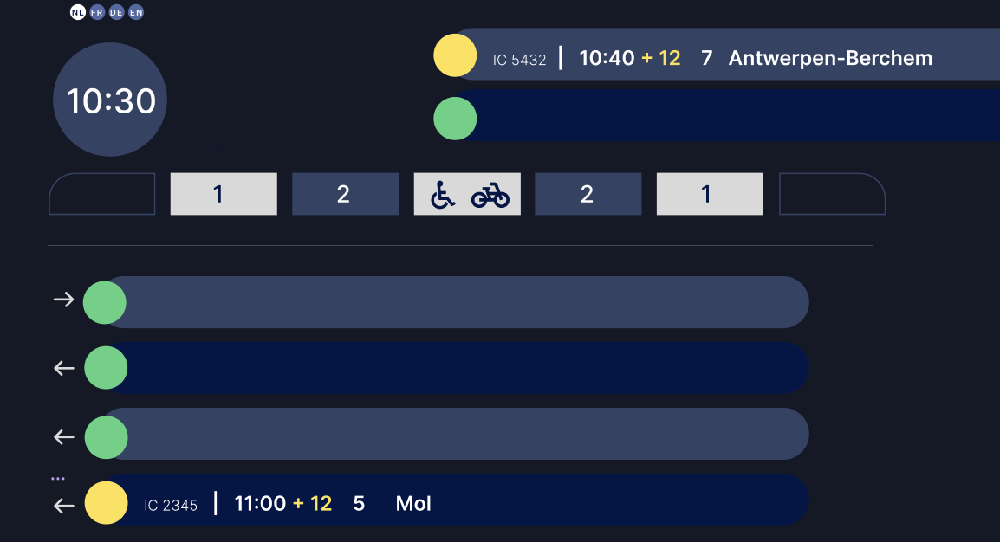
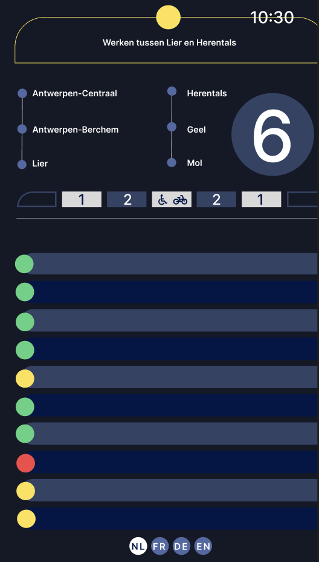

Wat heb ik onderzocht?
- NMBS/SNCB-borden & OV-wayfinding (contrast, volgorde, iconen).
- Typografische hiërarchie voor lijsten en tabellen.
- Toegankelijkheid: kleur niet alleen, contrast, labels bij iconen.
Nieuwe ontwerpkeuzes (met testen)
Hier zie je drie digitale testversies die ik gebruikte om hiërarchie, kleur en navigatie opnieuw te evalueren.



Wat is nu beter dan week 2?
- Strakker grid, rustiger ritme.
- Verbeterde scanbaarheid van tijd → bestemming → spoor → status.
- Altijd kleur + tekst voor dubbel zekere statuscommunicatie.
To do
- Feedback vragen.
- Kritisch herbekijken.
- Volgende iteraties voorbereiden.